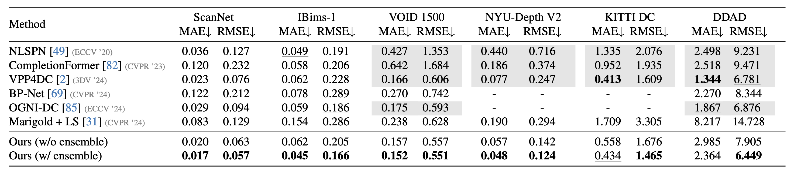

Depth completion upgrades sparse depth measurements into dense depth maps, guided by a conventional image. Existing methods for this highly ill-posed task operate in tightly constrained settings, and tend to struggle when applied to images outside the training domain, as well as when the available depth measurements are sparse, irregularly distributed, or of varying density. Inspired by recent advances in monocular depth estimation, we reframe depth completion as image-conditional depth map generation, guided by a sparse set of measurements. Our method, Marigold-DC, builds on a pretrained latent diffusion model (LDM) for depth estimation and injects the depth observations as test-time guidance, via an optimization scheme that runs in tandem with the iterative inference of denoising diffusion. The method exhibits excellent zero-shot generalization across a diverse range of environments and handles even extremely sparse guidance effectively. Our results suggest that contemporary monodepth priors greatly robustify depth completion: it may be better to view the task as recovering dense depth from (dense) image pixels, guided by sparse depth; rather than as inpainting (sparse) depth, guided by an image.
Overview of the Marigold-DC Inference Scheme. Our method extends the existing Marigold architecture (above the dashed line) by incorporating task-specific guidance mechanisms (below the line). Starting from the current depth latent variable $\mathbf{z}_t^{(\mathbf{d})}$, our method calculates a “preview” of the final denoised depth map via the Tweedie formula. This preview is then decoded and scaled using the learnable scale parameter $\hat{a}$ and shift parameter $\hat{b}$. We backpropagate the loss (red arrows) between the “preview” and the sparse depth and adjust the latent simultaneously with the scale and shift. Finally, we execute a scheduler step to proceed to the next denoising iteration.
Quantitative comparison of Marigold-DC with state-of-the-art depth completion methods on several zero-shot benchmarks. All metrics are presented in absolute terms; bold numbers are the best, underscored second best. In most cases, our method outperforms other approaches in both indoor and outdoor scenes, despite not having seen a real depth sample nor being trained for the depth completion task.
Refer to the pdf paper linked above for more details on qualitative, quantitative, and ablation studies.
@misc{viola2024marigolddc,
title={Marigold-DC: Zero-Shot Monocular Depth Completion with Guided Diffusion},
author={Massimiliano Viola and Kevin Qu and Nando Metzger and Bingxin Ke and Alexander Becker and Konrad Schindler and Anton Obukhov},
year={2024},
eprint={2412.13389},
archivePrefix={arXiv},
primaryClass={cs.CV},
}